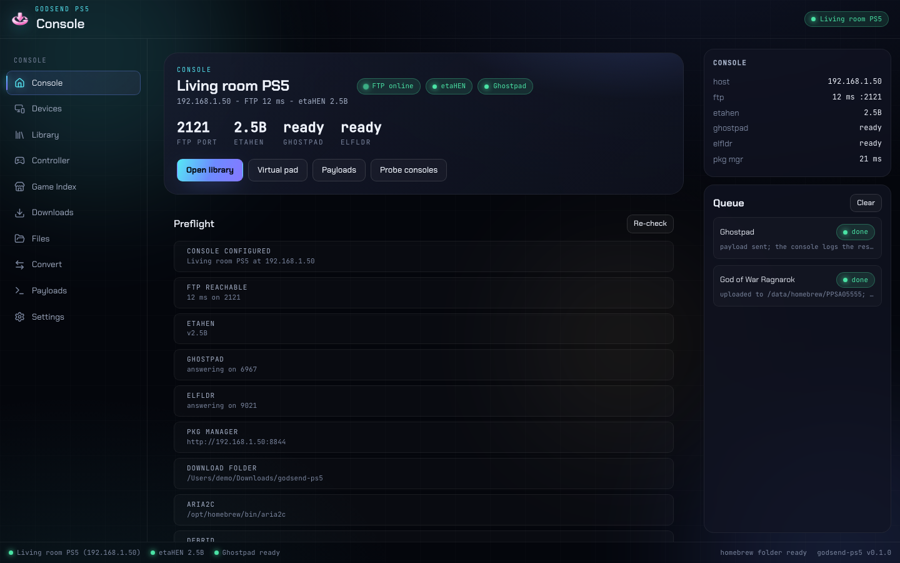
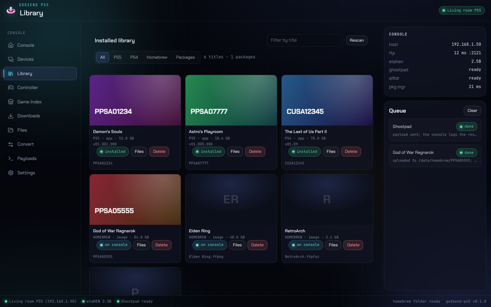
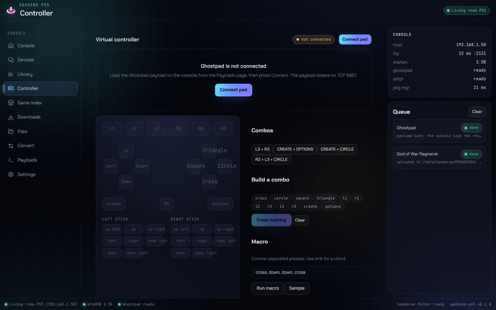
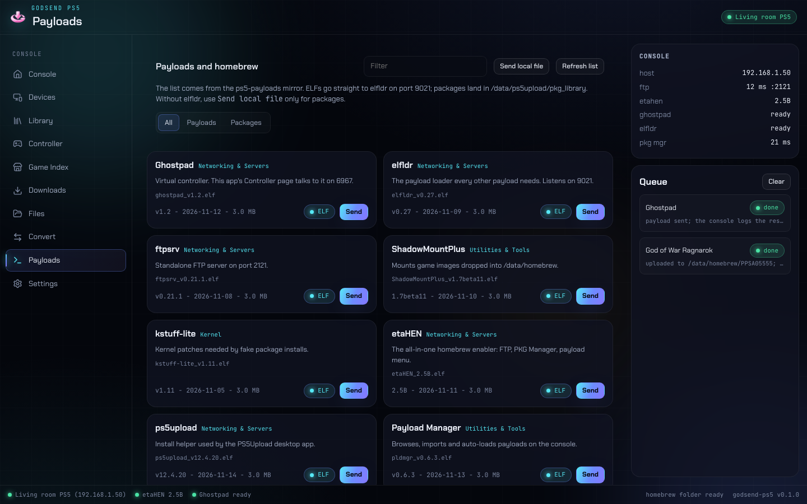
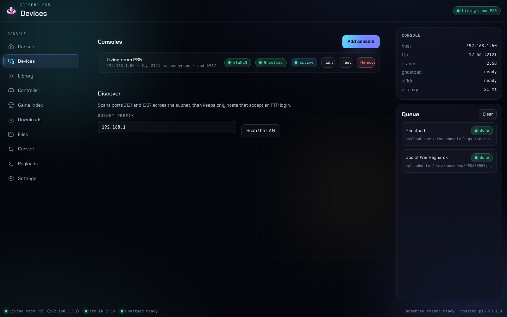
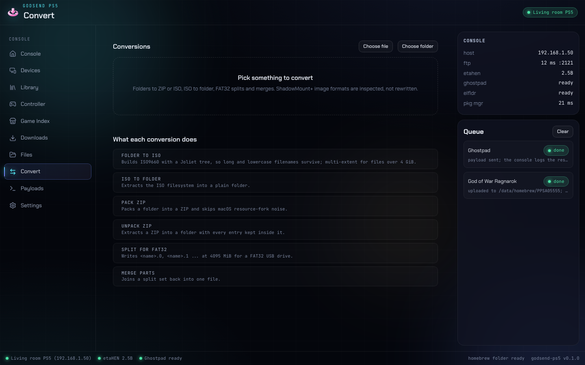

Console control
Probe FTP on 2121 and 1337, read etaHEN, confirm Ghostpad, elfldr and PKG Manager, and switch the active console.
Connect over FTP, see the installed library, send payloads to elfldr, drive the console with a virtual controller, download games and homebrew, convert what needs converting, and install everything back.






Builds are hosted on Cloudflare R2. A link stays valid until the app's next version.
The parts of managing a jailbroken PS5 that usually mean a file manager, a payload sender and a spreadsheet.
Probe FTP on 2121 and 1337, read etaHEN, confirm Ghostpad, elfldr and PKG Manager, and switch the active console.
Installed apps from appmeta, game images and folder dumps from the homebrew folders, and packages waiting to install. PARAM.SFO titles, icons, delete with confirmation.
A real on-screen DualSense over the Ghostpad payload: press and hold, keyboard mapping, combos, macros and stick directions.
The ps5-payloads catalogue fetched at runtime, then sent straight to elfldr. Local ELF and BIN files too.
Game index and Internet Archive search, aria2c when installed, a cancellable job queue.
PKG into the package queue, images and folder dumps into the homebrew folder for ShadowMount+, ZIP unpacking, FAT32 splitting on USB.
Folder to ISO with Joliet and multi-extent, ISO extraction, ZIP pack and unpack, split and merge. Image formats are inspected, not rewritten.
Two panes, local and console, with upload, download, folders and delete, all reporting into the job queue.
The list refreshes from the public mirror, so new builds appear without an app release.
elfldr listens on 9021, ftpsrv on 2121, etaHEN's FTP server on 1337 and the Ghostpad controller on 6967. GODsend PS5 probes all of them and tells you which piece is missing instead of failing silently.
cargo test --workspace npm --prefix app install npm --prefix app run build npm --prefix app run tauri build
The CLI: cargo build --release -p godsend-ps5-cli, then godsend-ps5 --help.
| Need | Why |
|---|---|
| A jailbroken PS5 with FTP | Every file operation. ftpsrv or etaHEN includes a server. |
| elfldr on 9021 | Sending payloads. Without it, package and image uploads still work. |
| Ghostpad on 6967 | The virtual controller. Everything else works without it. |
| ShadowMount+ (optional) | Mounts the images dropped into the homebrew folder. |
| aria2c (optional) | Multi-connection downloads; without it downloads use one connection. |
| Real-Debrid or TorBox keys (optional) | Resolve debrid links. Internet Archive needs neither. |